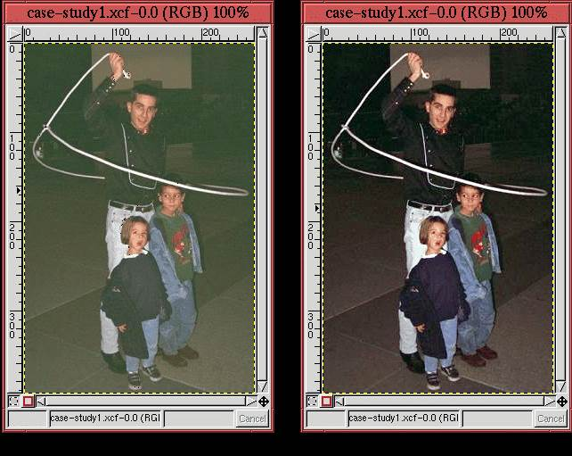

This chapter has covered many elements of photo touchup and
enhancement. To put all the elements into perspective, this section
presents a case study to illustrate the work flow of a typical
sequence of corrections. The photo in
Figure 6.37
Before we begin, several observations can be made concerning this photo:
The first step, as described in Section 6.1, is to
maximize the tonal range of the image.
This is done by opening the Levels tool and choosing Auto
Levels. Figure 6.38(b)
|  |
The second step is to correct for any remaining color casts. As described in Section 6.2.2, this is accomplished using the Color Picker to measure neutral colors in the image. The cowboy trick-roper and children are standing on a stone surface that appears to be granite. It is reasonable to guess that this stone should be a neutral gray.
With the Color Picker, you can see that there are actually a range of values from shadows to midtones in this stone. Measuring the image colors at several locations yields a representative shadow value of 59R 49G 42B in the dark stone just to the left of the roper's lower legs. Similar measurements made in the lighter stone just beneath the little boy's feet yield a midtone value of 119R 120G 109B. From these two measurements, it seems there is a brown/orange cast to the image. As for a representative highlight value, the right rear part of the lasso loop should be neutral but is measured at 177R 183G 167B. This is a pale green.
To remove these color casts, the Curves tool is used as
described in Section 6.2.2. For this case study, the
shadow values of red at 59 and green at 49 are both moved to match the
blue at 42. The midtone values of green at 120 and blue at 109 are
both matched to the red at 119. Finally, the highlight values of green
at 183 and blue at 167 are balanced to the red at 177. The result is
shown in Figure 6.39(b).
The next step is to remove the green glint at the middle left side of
the image. This is done as described in Section 6.3
using the Clone tool. The image without this blemish is shown
in Figure 6.40.
At this point in the sequence of corrections, it should be clear that you cannot get additional subject detail using the methods from Section 6.2.6. The cowboy and children already fill the entire range of tonal values from the darkest shadows in the cowboy's shirt to the brightest highlights in the rope and the little girl's collar. The only way to get more out of this image is to try and separate the subject from the background, which can only be accomplished by making a selection.
Figure 6.41
Inverting the selection by typing C-i in the image window, the
background can be lightened by using the
perturbation method described
in Section 6.2.5 to adjust the Value channel
of the Curves tool. As shown in
Figure 6.42(b), the result produces a subject
that
The final enhancement to the image is to sharpen the subject a bit.
This is done using the Unsharp Mask as described in
Section 6.4.1. The Unsharp Mask parameters were
chosen to be 3 for Radius and 0.5 for Amount. The final
result is shown in Figure 6.43(b),
The new image has several qualities worth noting. First, the colors of the enhanced image are much sharper and better defined. In comparison, the original image's colors are muddy. This is due primarily to the enhancement to the tonal range. Second, the green tinge seen in the original image has been eliminated; the subject of the enhanced image is also sharper and better defined against the background. This is due to the Unsharp Mask and the reprocessing of the background with the help of selection tools and the Curves tool.